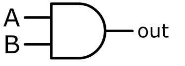
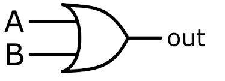
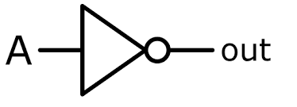
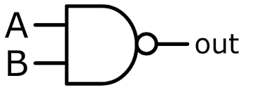
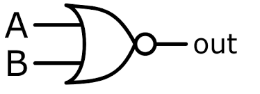

Logic gates are the fundamental building blocks of digital electronics. Computers use millions or billions of these gates to process information.

The AND gate outputs 1 only when both inputs are 1.
| A | B | Output |
|---|---|---|
| 0 | 0 | 0 |
| 0 | 1 | 0 |
| 1 | 0 | 0 |
| 1 | 1 | 1 |

The OR gate outputs 1 if at least one input is 1.
| A | B | Output |
|---|---|---|
| 0 | 0 | 0 |
| 0 | 1 | 1 |
| 1 | 0 | 1 |
| 1 | 1 | 1 |

The NOT gate reverses the input value.
| Input | Output |
|---|---|
| 0 | 1 |
| 1 | 0 |

The NAND gate is the opposite of the AND gate.
| A | B | Output |
|---|---|---|
| 0 | 0 | 1 |
| 0 | 1 | 1 |
| 1 | 0 | 1 |
| 1 | 1 | 0 |

The NOR gate is the opposite of the OR gate.
| A | B | Output |
|---|---|---|
| 0 | 0 | 1 |
| 0 | 1 | 0 |
| 1 | 0 | 0 |
| 1 | 1 | 0 |